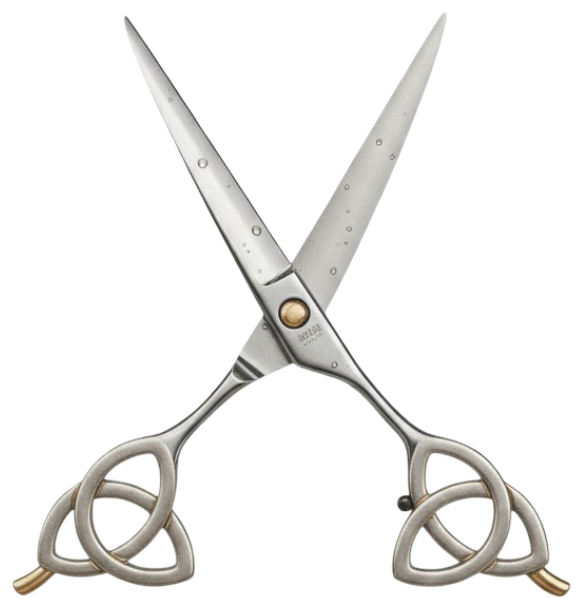
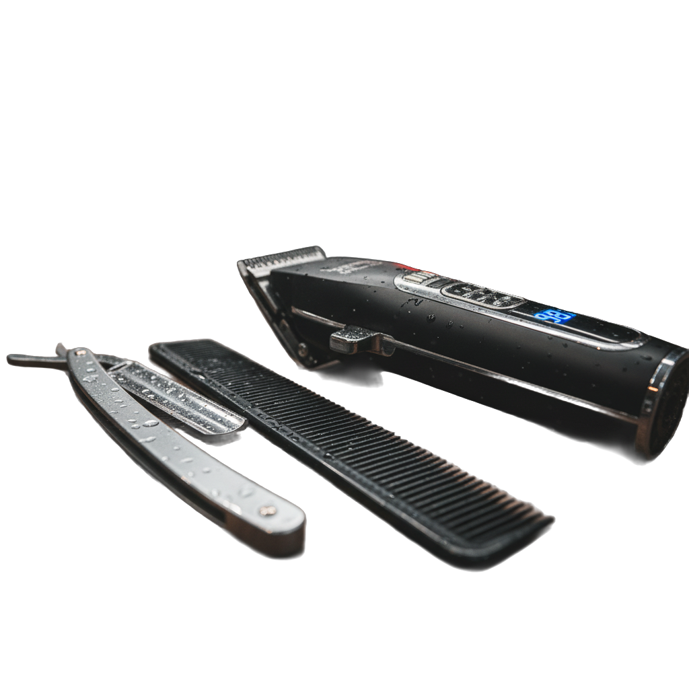

Respect the craft
Recognise the skill, care and professionalism behind great barbering.
IBF 2000 · National membership campaign
For the first time, let’s organise our industry. Join the movement to build professional recognition, shared standards and a national voice for barbering in Ireland.

THE NATIONAL FOUNDING MEMBERSHIP CAMPAIGN
IBF 2000 is a campaign to bring working professional barbers together and build a visible, organised voice for the industry.
See how to get involved ↘Campaign targets and membership terms are subject to the final launch arrangements. The 12-month timeline is an internal stretch goal.
Barbering is a skilled craft, a local business and a source of connection in communities across Ireland.
The Irish Barbering Federation exists to help the industry build its future together. We are bringing barbers, educators and industry partners into a conversation about professional standards, learning, representation and the value of the craft.
What we’re working on ↗Recognise the skill, care and professionalism behind great barbering.
Support a clear, shared conversation about quality and development.
Make space for the people and businesses shaping the industry.
We’re developing a practical, collective platform for barbering in Ireland. These are the areas at its heart.
Help shape a shared approach to professional standards and recognition across the industry.
FOUNDATIONAL WORKChampion learning, practical skills and pathways that help barbers progress throughout their careers.
IN DEVELOPMENTBring industry experience into conversations that affect barbering, business and the people who work in them.
ONGOING DIALOGUECreate opportunities to connect, share ideas and celebrate the craft across Ireland.
GROWING TOGETHERYOUR CRAFT. YOUR INDUSTRY. YOUR VOICE.
Make your membership count for more than a badge. Join a national organisation being built to represent, recognise and support Irish barbers—and have a say in its direction.
IBF 2000 campaign membership fee
Be one of the first 2,000.
Qualifying paid members are intended to receive permanent Founding Professional recognition.
WHAT MEMBERSHIP IS FOR
Your membership adds your voice to the IBF’s representation and engagement with Government and industry stakeholders. A united profession is harder to overlook.
Take your place as an IBF Professional Member. Qualifying members can apply for the annual IBF Professional Barber Licence, an IBF professional credential.
Bring your experience into the development of professional standards and recognition that reflect the skill and responsibility behind the chair.
Be part of the IBF’s work to grow education, continuing professional development, events and career opportunities for barbers.
Help build useful industry research and practical business support for barbers and barbershops.
The IBF is exploring insurance and commercial partnerships to add practical value for members as agreements are established.
The €190 annual fee is the IBF 2000 campaign offer. Membership and any IBF credential renew annually; Founding Professional recognition is intended to be permanent for the first 2,000 qualifying paid members. The IBF Professional Barber Licence is an IBF professional credential, not a statutory or Government licence. Education, business support, research, and partner offers are being developed and will be identified as they become available; insurance and commercial benefits are subject to partner agreements. Eligibility and confirmed member benefits will be published before enrolment opens.

Every day, barbers build trust, confidence and connection—one conversation at a time.
The IBF is a place for that community to come together: to share experience, learn from one another and help the craft keep moving forward.
Find your place in the community ↗The IBF is building a constructive voice for the industry.
Our policy and representation work brings the realities of barbering into focus: the skills, businesses, training needs and community role that make up the profession. We aim to support informed discussion with decision-makers and industry partners.
Explore our work ↗Updates, conversations and opportunities from the Irish Barbering Federation.
News, events and announcements will appear here as the IBF programme develops.
THE NEXT CHAPTER IS OURS TO SHAPE
Interested in membership, training, events or working with the IBF? We’d like to hear from you.
Email us at info@barbersfederationofireland.com and we’ll get back to you.
Send us an email ↗ IRELAND · THE BARBERING COMMUNITY